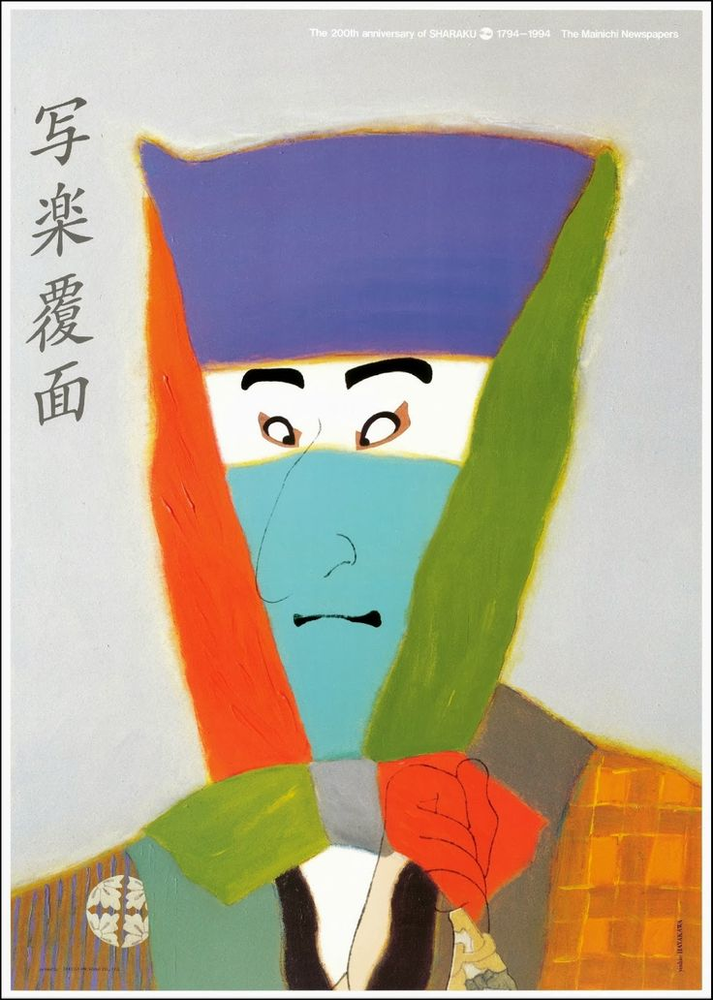
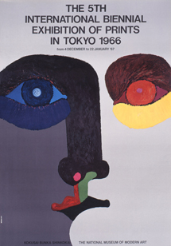
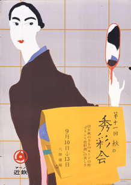
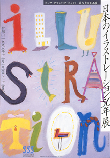
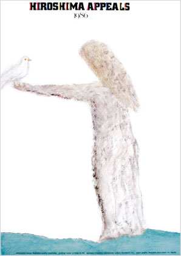
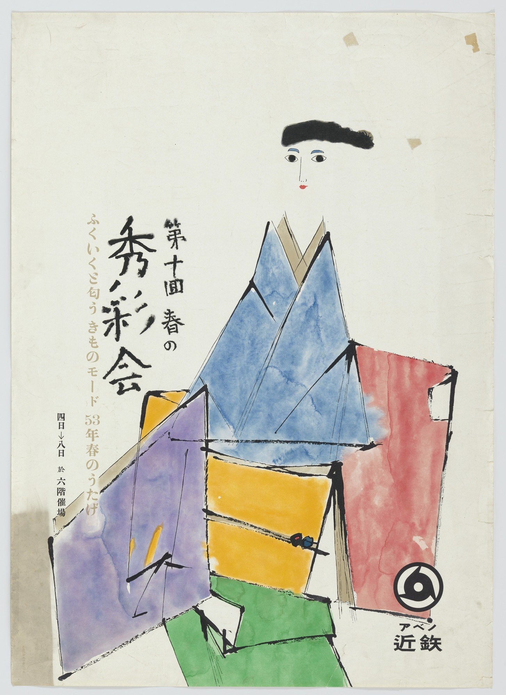
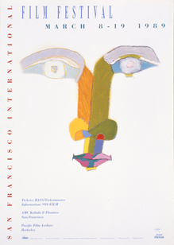
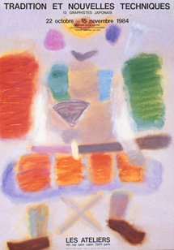

A celebration of the 200th anniversary of the artist Sharaku’s work by Yoshio Hayakawa, Print, c. 1995

Advertisment for the 5th International Biennial Exhibition of Prints in Tokyo by Yoshio Hayakawa, Print, c. 1966

“11th Kimono Show” by Yoshio Hayakawa for the Kintetsu Department Store, Lithograph c. 1953

The Exhibition of 50 years of Japanese Illustration (Ginza Graphic Gallery), Print, c. 1995

“Hiroshima Appeals - 1986” by Yoshio Hayakawa, Print, c. 1986

“10th Kimono Show” by Yoshio Hayakawa, Lithograph, c. 1953

"San Francisco International Film Festival" by Yoshio Hayakawa, Print, c. 1989

"Tradition et Nouvelles Techniques" by Yoshio Hayakawa, Print, c. 1984